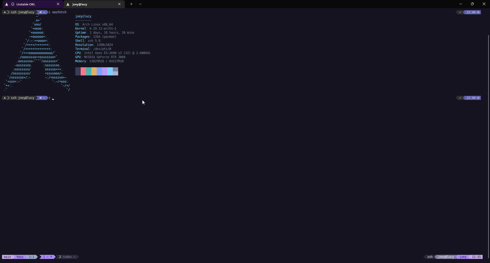

Machine-matching zsh, tmux, nano, Powerlevel10k, fzf, zoxide, icon ls, and package-manager friendly terminal setup for Linux and macOS.
bash -c "$(curl -fsSL https://raw.githubusercontent.com/obnoxiousmods/obbyconfigs/main/install.sh)" -- --yes --dotfile-mode overwrite --package-mode optional --nano-mode auto
bash -c "$(curl -fsSL https://raw.githubusercontent.com/obnoxiousmods/obbyconfigs/main/install.sh)" -- --dry-runuv tool install git+https://github.com/obnoxiousmods/obbyconfigs.git
obbyinstaller --helppipx install git+https://github.com/obnoxiousmods/obbyconfigs.git
obbyinstaller --list-planTagged releases publish wheel, source tarball, pyz executable, Linux and Windows install scripts, Linux package artifacts, and multi-arch GHCR images.
PyPI trusted publishing, AUR SSH publishing, and Homebrew tap publishing are wired for release workflows once the external registry settings are configured.
--scope user --scope system --package-mode required --package-mode optional --package-mode all --package-groups dev,python,node --nano-mode auto --force
obbyinstaller --yes --dotfile-mode overwrite --package-mode all --package-groups dev,python,node,network,fonts --nano-mode autoPowerlevel10k with dark OS/identity blocks, muted directory blocks, and git-like VCS colors.
zoxide, fzf file and directory pickers, history substring search, and consistent keybindings.
Python venvs, uv tools, pipx/local bin, node_modules, pnpm, bun, deno, cargo, Go, pyenv, and rye shims.
Interactive zsh attaches to the newest tmux session, or creates ${OBBY_TMUX_SESSION:-main} when none exists. Use NO_AUTO_TMUX=1 to disable.
tmux uses a Dracula status line tuned to the zsh prompt, helper scripts for smart pane labels, mouse support, vi copy mode, and expanded hotkeys. nano can be installed with Dracula UI colors and extra syntax rules.